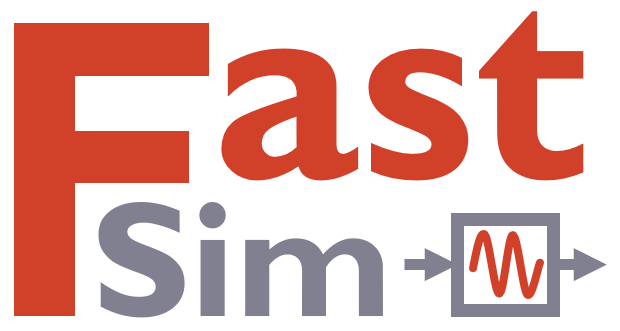

Simulate 100× faster. Deploy as C.
Drop-in replacement for PathSim: the same Python API on a Rust engine that JIT-compiles your models, and lowers them to dependency-free C99 for embedded targets, with fixed-point, A2L calibration maps and software-in-the-loop verification built in.
from fastsim import Simulation, Connection
from fastsim.blocks import Integrator, Amplifier, Scope
# blocks
integ = Integrator(1.0)
amp = Amplifier(-0.5)
scope = Scope()
# connections (feedback loop)
connections = [
Connection(integ, amp, scope),
Connection(amp, integ)
]
# simulate (50-100x faster than PathSim)
sim = Simulation([integ, amp, scope], connections)
sim.run(10.0)
time, [x] = scope.read()One API, two engines
FastSim is the proprietary production build of the PathSim API: models written against PathSim run unchanged, but the simulation core and the numeric hot path execute entirely in compiled Rust. It is free for noncommercial use under the PolyForm Noncommercial license; commercial use needs a commercial license.
The MIT-licensed Python reference. Readable, hackable, minimal dependencies. Built for learning, research and small models.
The same API on a Rust engine: 50 to 100 times faster, JIT-compiled callbacks, DAE and periodic steady-state solvers, native FMI, and a C code generator for embedded deployment.
Performance
Cost per integration step across 15 dynamical systems against every tool: FastSim (compiled + per-block), PathSim, OpenModelica, boost::odeint, CasADi/CVODES, SciPy, Diffrax and Numba. A missing marker means the tool cannot express that system (an explicit stepper on a stiff problem, a right-hand side it cannot compile). Warm is steady-state cost; Cold includes one-off compile/JIT. Same model, solver class and tolerances throughout. Lower is better.
Simulate
Everything PathSim runs, at Rust-native speed, plus solver capabilities that have no open-source equivalent: JIT-compiled callbacks with symbolic Jacobians, first-class index-1 DAEs, direct periodic steady-state, and FMI 3.0 implemented natively in the engine.
JIT compilation
FastSim ships its own NumPy-compatible symbolic tracer. User-supplied
Python callbacks get traced lazily the first time they run: the
right-hand side of an ODE, the algebraic law of a Function, the output of a Source, the
dynamics and outputs of a DynamicalSystem. Every
arithmetic operation, every NumPy ufunc, every np.stack, np.sum, np.where or @ on the
symbolic inputs records a node into an SSA graph. A pipeline of
optimization passes (constant folding, CSE, algebraic identities,
FMA fusion, dead-code elimination) simplifies the graph, which is
then lowered into a flat Rust tape the simulation evaluates directly.
Once the trace succeeds, the Python interpreter is no longer involved
inside the integration loop. Callbacks execute at Rust-native speed
with no marshaling, no GIL, no per-op NumPy dispatch. The same graph
is also differentiated symbolically to produce an analytical Jacobian
that implicit solvers like ESDIRK43 consume for their
Newton stage solve. Tracing covers every block that takes a
user-supplied function: ODE, Function, Source, DynamicalSystem, DynamicalFunction, Wrapper, MassMatrixDAE, SemiExplicitDAE, and FullyImplicitDAE. If a callback uses something the
tracer can't lower, that single block falls back to Python while the
rest of the simulation keeps running native.
Differential-algebraic equations
FastSim treats index-1 DAEs as first-class blocks in three canonical forms.
The SemiExplicitDAE block takes a system split into differential
and algebraic parts and reduces it to a pure ODE by solving the algebraic
constraint with an inner Newton iteration at every right-hand side evaluation,
which means any of the 21 solvers can integrate it, including explicit ones. MassMatrixDAE covers the case where a constant mass matrix
multiplies the derivative vector, with zero rows allowed so that physical
conservation laws can enter the model directly. FullyImplicitDAE accepts the general residual and requires an implicit solver. All three
blocks feed their analytical Jacobians to the stage solver when the user
callback is traceable, which is what keeps the preconditioned Anderson
acceleration fast.
Periodic steady state
FastSim finds the periodic limit cycle of a driven system directly
via matrix-free Anderson-accelerated shooting on the period map g(x₀) = x(T; x₀). sim.periodic_steady_state(period, ...) integrates one period with the inner ODE solver of your choice
(explicit, implicit, multistep, DAE-extended), then runs a per-block
Anderson step that nudges x₀ toward the fixed point.
No monodromy matrix is assembled or factorized; only function
evaluations. Convergence uses the same WRMS-scaled NLS_COEF threshold every implicit-stage solver in
FastSim does, so tolerances carry over from transient runs without
retuning. Pays off when settling time exceeds roughly ten forcing
periods: high-Q resonators, weakly-damped loops, large LC filters.
Native FMI 3.0
FastSim implements the FMI 3.0 standard directly in Rust. ModelExchangeFMU exposes the FMU's derivative function as a
block right-hand side that the solver integrates alongside everything else,
with event indicators translating into ZeroCrossing events and
FMU-announced time events populating a ScheduleList. CoSimulationFMU runs the FMU on a fixed communication grid,
scheduled through a block-internal event, and the full event-mode handshake
runs whenever the FMU signals an event. The FMU behaves like any other block
in the graph.
Inspect & verify
A model is an asset: capture it, diff it, hand it to other tools, and prove that what runs matches what you built. The intermediate representation is the substrate, and verification closes the loop.
Intermediate representation
Every FastSim model has a second life as a typed, serializable
intermediate representation. sim.to_ir() walks the live
simulation and atomizes each block down to scalar SSA operations,
producing a hierarchical Module that preserves subsystem
structure, connections, parameters, and block-internal events. The IR
round-trips losslessly through JSON, so a model can be captured, stored,
diffed, or handed to another tool, and it is the substrate FastSim uses
for code generation and cross-engine verification
rather than a separate hand-written export.
The same op graph also powers compilation. subsystem.compile() fuses an entire subsystem into a single native block with its own fused dx/dt tape, a symbolic Jacobian built from that tape, and any
internal events captured and replayed, then drops back into a normal
simulation like any other block. sim.compile() takes it one
step further and fuses a whole model into one tape over a global state
vector. The block boundaries you design stay intact for authoring and
introspection; compilation collapses them only where it pays off.
Deploy
The same model that runs in Python lowers to self-contained C99: reentrant, allocation-free, libm only, ready for firmware builds, HIL rigs and ECUs, with calibration and verification tooling around it.
C code generation
sim.to_c(name) emits the whole model as portable C99 with
no dependencies beyond libm: no allocation, no threads, no
globals. One instance struct holds all state, so the code is reentrant
by construction, and every state, output and tunable parameter is
addressable through a stable SIG_* inventory. Wire <name>_step into a timer ISR or RTOS task and the
cost per call is one fixed-stage RK step, statically bounded, with
discrete events firing inside the step exactly as they do in
simulation. scaffold=True adds a CMake build and a demo
driver; trace=True emits a machine-readable model-to-code
map with static RAM, stack and per-step op metrics for CI size gates.
For targets without an FPU, numeric="q16.16" lowers the
entire model to integer-only arithmetic in a global Q format: defined
wrap semantics, explicit scale handling, LUT-based nonlinearities. a2l=True emits an ASAP2 calibration description for XCP
tooling (CANape, INCA), generated from the same plan as the C so names
and offsets agree by construction. And sim.verify_c() closes the loop: it compiles the emitted C with your local toolchain,
integrates it against the reference engine over the same trajectory,
and reports the worst scaled state error. Software-in-the-loop parity
in one call.
Commercial license
FastSim is free under the PolyForm Noncommercial license for research, teaching and personal projects. Using it, or its generated C code, in a commercial product needs a commercial license. Tell us about your use case and we’ll get back to you.